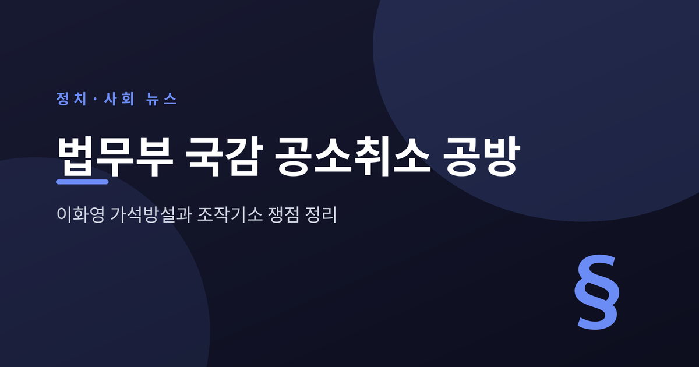
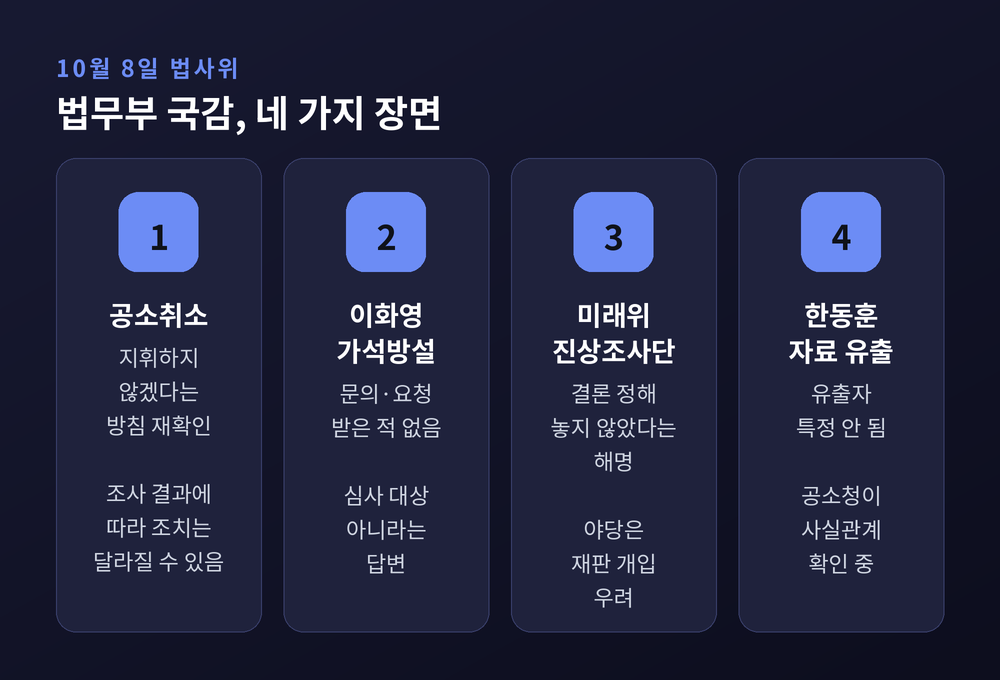
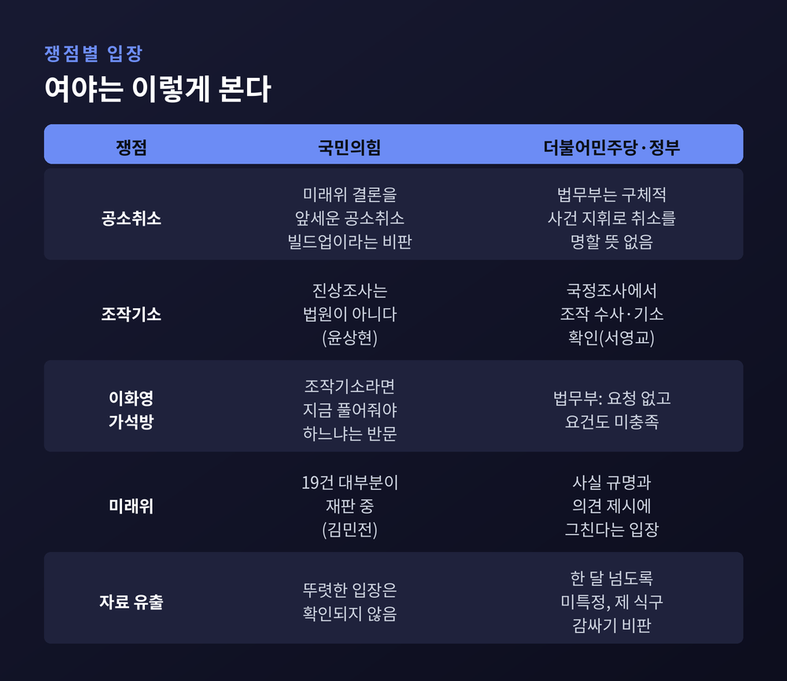
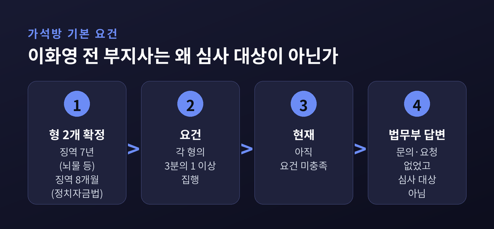
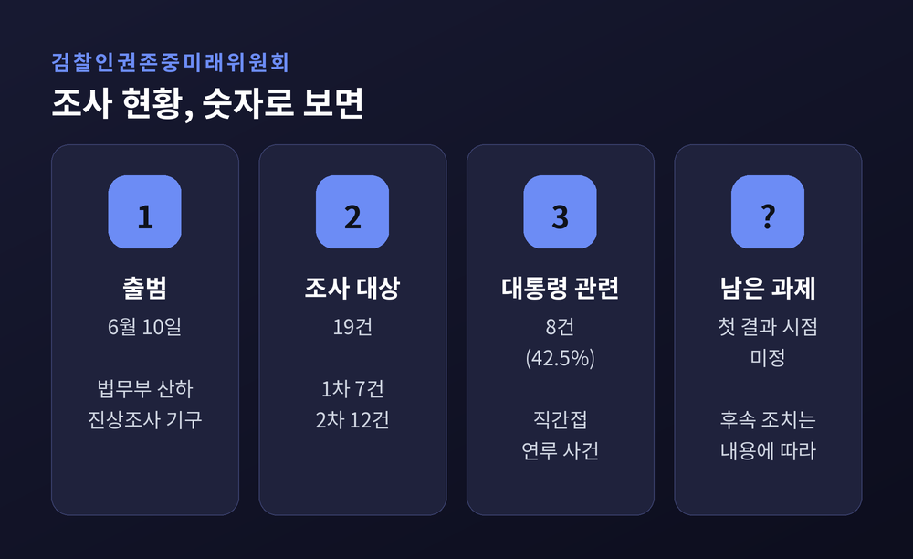
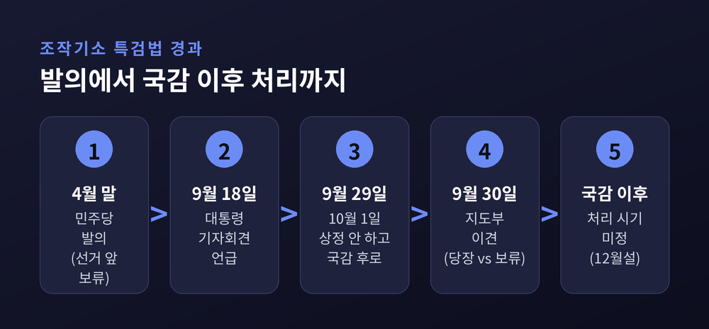

이번 글에서는 10월 8일 국회 법제사법위원회의 법무부 국정감사를 정리해 보겠습니다. 이재명 대통령 사건의 공소취소 가능성, 이화영 전 경기도 평화부지사의 가석방설, 한동훈 의원 관련 자료 유출 의혹이 한 자리에 올랐습니다. 여야 양측의 주장을 나란히 적었고, 확인되지 않은 대목은 그렇게 표시했습니다.
세 줄 요약
10월 8일 오전 10시, 서영교 위원장이 이끄는 법사위가 법무부와 산하 3개 기관을 상대로 국정감사를 열었습니다. 법무부 장관은 공석이어서 이진수 차관이 장관 직무대행으로 답했습니다(뉴스1, 서울신문).
공소청은 10월 2일 출범했습니다. 그런데 8일까지 공소청장 후보자는 지명되지 않았습니다. 파이낸셜뉴스(뉴시스 전재)는 이를 두고 "개문발차"라는 지적이 나온다고 전했습니다.

이날 장면은 크게 네 갈래였습니다. 첫째 이재명 대통령 사건의 공소취소, 둘째 이화영 가석방설, 셋째 미래위와 진상조사단의 성격, 넷째 한동훈 의원 수사자료 유출 의혹입니다. 여기에 위원장의 발언 시간과 의사진행을 둘러싼 충돌이 겹쳤습니다.
곽규택 국민의힘 의원은 위원장 발언 비중을 "18명이 회식하는데 6인분을 먹은 것"에 빗댔고, 서영교 위원장은 "모욕적인 발언"이라고 반박했습니다(한국일보). 6일 대법원 국감에서도 진행 방식을 두고 40분 넘게 충돌이 이어졌다고 SBS는 전했습니다.
검찰청이 폐지되고 공소청과 중대범죄수사청이 출범한 지 엿새가 지났습니다. 장관도, 공소청장도 비어 있는 상태에서 제도의 운영 원칙이 처음으로 국회 질의대에 올랐습니다.
대통령 본인 사건이 걸려 있다는 점이 무게를 더합니다. 검찰은 이재명 대통령을 제3자뇌물 혐의로 기소했고, 대통령은 혐의를 부인하고 있습니다. 취임 이후 재판은 중지된 상태이고 기일은 잡히지 않았습니다(inews24).
공소취소는 법적으로 검사만 할 수 있고, 1심 판결 선고 전까지 가능합니다. 검찰청법 제8조에 따라 장관은 검찰총장을 통해서만 구체적 사건을 지휘할 수 있습니다(데일리안). 누가, 어떤 근거로, 어떤 절차를 거쳐 판단하느냐가 곧 사법 신뢰의 문제가 됩니다.
이진수 직무대행의 답변은 두 갈래였습니다. 한쪽은 선을 긋는 말입니다. 전임 정성호 장관도 구체적 사건 지휘로 공소취소를 명할 뜻이 없다고 밝혔고, 이는 현재도 같은 방침이라고 박형수 국민의힘 의원의 질의에 확인했습니다(서울신문, 뉴스웍스).
다른 한쪽은 여지를 남기는 말입니다. 미래위와 진상조사단은 결론을 정해 놓고 조사하지 않으며, 조사 결과 내용에 따라 후속 조치가 달라질 것이라고 했습니다(파이낸셜뉴스).
국민의힘은 이 구조 자체를 문제 삼았습니다. 박형수 의원은 대통령이 임명한 사람이 대통령 공소를 취소하는 것은 이해충돌이라고 짚었습니다. 김민전 의원은 미래위가 고른 19건 대부분이 재판 중이라며 "과거를 반성한다면서 왜 현재 진행 중인 사건들을 손대려 하느냐"고 물었습니다(뉴스웍스). 윤상현 의원은 "진상조사는 법원이 아니다"라는 취지로 비판했습니다(inews24).
민주당의 논리는 다릅니다. 검찰이 이미 조작기소를 했기에 검찰청 폐지에 이르렀고, 국정조사 특위에서 이화영 사건이 조작 수사·조작 기소였음이 드러났다는 주장입니다(서영교 위원장 발언, 한국일보). 정성호 의원은 지난 8월 "불법적 절차로 기소됐다면 판단은 검찰의 몫"이라는 입장을 냈습니다(서울신문).

가석방 논란은 국감 전날 불붙었습니다. 이화영 전 부지사의 김광민 변호사가 "여러 경로로 이재명 대통령 측에 가석방 의사를 전달했다"고 주장했기 때문입니다(inews24, 서울신문).
이진수 직무대행은 윤상현 의원의 질의에 이 전 부지사 측, 대통령실, 여권으로부터 문의나 요청을 받은 적이 없다고 답했습니다. 가석방심사위원장인 그는 이 전 부지사가 "심사 대상이 아니다"라고 설명했습니다.
이유는 형기에 있습니다. 이 전 부지사는 쌍방울 대북송금 사건 등으로 지난해 6월 대법원에서 뇌물·외국환거래법 위반 징역 7년, 정치자금법 위반 징역 8개월을 확정받았습니다. 벌금 2억5000만원과 추징금 3억2595만원도 함께 확정됐습니다(더팩트). 형이 2개이므로 각 형의 3분의 1 이상을 집행해야 하는데, 아직 못 채웠다는 것입니다.

여기서 정치 공방이 시작됐습니다. 윤상현 의원은 정부가 조작기소라고 한다면 이 전 부지사를 지금 풀어줘야 맞는데, 확정 판결로 수감 중이고 여당은 대통령 공소취소를 추진하는 것 아니냐고 물었습니다. 주진우 의원은 민주당 의원들이 이화영 이야기만 나오면 지나치게 몸을 낮춘다며 "굽신굽신"이라는 표현을 썼다고 SBS가 전했습니다.
서영교 위원장은 국정조사에서 이 사건이 조작 수사였음이 드러났다고 반박했습니다. 이 전 부지사는 옥중 입장문(2쪽)에서 변호인의 "대통령에게 화가 많이 났다"는 발언이 진의와 다르다고 밝혔습니다(데일리안).
한 가지 짚어 둘 점이 있습니다. '조작기소' 여부는 법원의 최종 판단이 나온 사안이 아닙니다(창업일보). 6월 20일 수원지법은 '연어 술파티' 위증 혐의로 이 전 부지사에게 징역 4개월을 선고했고, 배심원 7명 중 4명은 술자리가 없었다고 판단했습니다. 국민의힘은 이를 조작 프레임이 흔들린 증거로, 민주당은 "비록 유죄지만 실질은 무죄"라는 근거로 각각 해석했습니다(중앙일보). 이 전 부지사 측은 새로 확인된 국정원 문건을 근거로 재심 청구도 검토 중입니다(더팩트).
미래위는 6월 10일 출범해 19개 사건을 조사 대상으로 골랐고, 이 가운데 8건(42.5%)이 이재명 대통령과 직간접으로 얽혀 있습니다(데일리안). 1차 7건에는 대장동, 위례신도시, 김용 불법자금, 수원 쌍방울 대북송금, 문재인 정부 부동산 통계 조작, 2020년 서해 공무원 피격, 윤석열 전 대통령 관련 부산저축은행 수사 명예훼손 사건이 들어갔습니다(뉴시스).

논란에 불을 붙인 것은 이정현 검찰총장 직무대행(공소청 출범 후 공소청장 직무대행 표기)의 9월 23일 발언입니다. 첫 출근길에 이 대통령 공소취소에 즉답을 피하며 "진상조사 결과를 살펴봐야 할 것"이라고 했습니다(더팩트). 4월 국정조사 청문회에서 대북송금 수사를 "매우 잘못된 수사 방식"이라고 사과한 인물이기도 합니다.
국민의힘 장동혁 대표는 이를 공직 임명과 공소취소를 맞바꾸려는 것이라고 비판했습니다(데일리안). 이진수 직무대행은 국감에서 이 발언이 "가정을 전제로 한 말로 보인다"고 답했습니다.
다만 야당의 문제 제기가 모두 받아들여진 것은 아닙니다. 법무부는 미래위가 사실을 밝히고 의견을 낼 수 있을 뿐이라는 입장이고, 공소를 취소할 권한은 검사에게 있다는 법 구조가 그대로 남아 있습니다.
민주당 의원들은 반대 방향의 질의에 집중했습니다. 한동훈 무소속 의원이 대정부질문에서 공개한 김승원 전 장관 후보자 관련 서부지검 기소계획 문건이 검찰 내부에서 샜다는 의혹입니다. 김한규 의원은 이미 종결된 사건을 외부에 넘기는 것은 공익신고로 보호받기 어렵다고 주장했습니다(더팩트).
이진수 직무대행은 문건이 한 의원의 페이스북 내용과 같아 내부 유출 가능성이 높다고 했지만, 유출자는 아직 특정되지 않았다고 답했습니다. 공소청은 전자기록 훼손 우려 때문에 수사로 규명해야 한다는 입장입니다. 박지원 의원은 한 달이 넘었는데 아직 확인 중이냐고 따졌고, 민주당은 "제 식구 감싸기"라며 강제수사를 촉구했습니다(SBS).
박균택 의원은 한 의원 딸 관련 의혹을 두고, 2022년 11월 서울경찰청 반부패수사대가 신청한 미국 사법공조를 서울중앙지검이 11일간 보관하다 반려해 법무부 국제형사과까지 가지 않았다고 지적했습니다. 이 대행은 이날 처음 알았다며 공소청을 통해 확인하겠다고 답했습니다(더팩트, 데일리안).
한동훈 의원 측은 한 달 넘게 결과가 없다는 입장입니다(뉴스웍스). 이 대행은 도이치모터스 수사에 대해서도 검찰과 국민의 신뢰를 크게 떨어뜨린 부분이 있다고 인정했습니다(서울신문). 여야 모두 상대편을 겨냥한 검찰 수사의 문제를 이 자리에서 꺼낸 셈입니다.
국감장 밖의 정치 일정도 이 공방과 이어져 있습니다. 민주당은 4월 말 '윤석열 정권 조작기소 특검법'을 발의했지만 지방선거 역풍 우려로 미뤘고, 9월 29일 10월 1일 본회의 상정을 하지 않기로 했습니다. 처리 시기는 국감 이후로 넘겼습니다(서울신문).

당내 온도차는 있습니다. 전용기 최고위원은 9월 30일 "당장이라도" 처리해야 한다고 했지만, 한병도 원내대표는 10월 1일 상정을 거부했습니다. 당 관계자 사이에서는 예산 국회가 끝난 뒤 12월에 처리할 수 있다는 말도 나왔습니다(서울신문). 이는 확정된 일정이 아닙니다.
국민의힘 정점식 원내대표는 이 법을 "공소 취소 빌드업 특검"이자 "대국민 사기극"이라고 규정했습니다. 민주당 전은수 대변인은 법의 필요성에는 공감하되 시기는 국감 뒤에 정하겠다고 했습니다.
법사위 국감은 12일 감사원을 시작으로 13일 헌법재판소와 공수처, 15일 법제처와 군사법원, 16일 서울고법 등, 19일 서울광역공소청 등, 20일 대전고법과 대전광역공소청 등, 22일 공소청을 거쳐 26일 종합감사로 마무리됩니다(창업일보). 공소청 국감에서 공소취소와 자료 유출 문제가 다시 오를 가능성이 있습니다.
지켜볼 대목은 다섯 가지입니다.
마지막으로 한 가지만 덧붙이겠습니다. 이번 국감에서 가장 또렷하게 남은 것은 결론이 아니라 질문이었습니다. 정부는 "지휘하지 않는다"고 했고, 야당은 "조사 결과로 길을 닦는 것 아니냐"고 되물었습니다. 여당은 "이미 조작이 드러났다"고 했고, 법원의 최종 판단은 아직 나오지 않았습니다.
"공소취소를 누가, 어떤 근거로 판단하느냐가 제도의 신뢰를 가른다."
양측 주장을 나란히 놓고 보면, 지금 필요한 것은 어느 쪽 말이 큰지가 아니라 어떤 절차로 확인되는지일 것입니다. 남은 국감 일정이 그 답에 얼마나 다가설지, 차분히 지켜보시길 권합니다.
참고 보도: 파이낸셜뉴스·뉴시스·뉴스1·한국일보·서울신문·데일리안·더팩트·SBS·뉴스웍스·inews24·창업일보(이상 10월 8~9일), 더팩트(9월 23일), 데일리안(9월 26일), 서울신문(9월 29~30일), 중앙일보(6월 21일)